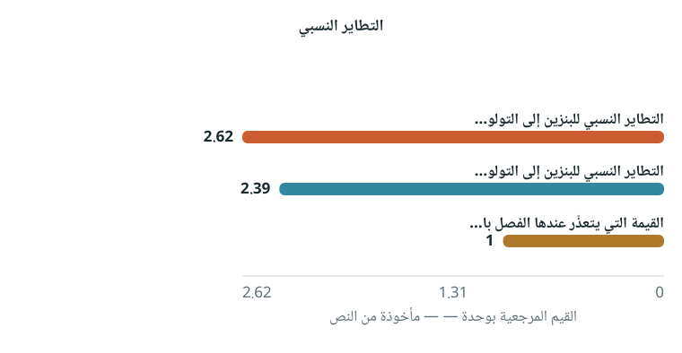

التطاير النسبي
Relative volatility
مقياس بلا وحدة لنسبة توزيع مكوّنين بين البخار والسائل في حالة التوازن؛ كلما زاد فوق الواحد سهل الفصل بالتقطير، وعند الواحد يتعذّر.
التطاير النسبي هو مقياس بلا وحدة يصف كم يكون أحد المكوّنين أكثر تطايرًا من الآخر في حالة التوازن بين البخار والسائل. يُعرَّف بأنه نسبة تطاير المكوّن الأول إلى تطاير الثاني، والتطاير نفسه نسبة الضغط الجزئي للمكوّن إلى كسرّه المولي في السائل. وبالاستعاضة عن الضغط الجزئي بحاصل ضرب الكسر المولي في الضغط الكلي، يتبيّن أن التطاير النسبي يساوي نسبة معاملَي التوزيع، أي نسبة الكسر المولي في البخار إلى نظيره في السائل لكل مكوّن. وهو المفتاح الذي يُقاس به جدوى التقطير: إذا كان أكبر من الواحد كان المكوّن الأول أغنى في البخار وأمكن الفصل، وإذا ساوى الواحد خرج البخار بتركيب السائل نفسه فتعذّر الفصل، وهو حال الأزيوتروب. وفي المزيج المثالي يختصر التطاير النسبي إلى نسبة ضغطَي البخار النقيّين عند درجة الحرارة نفسها، فيصبح قياسًا حراريًّا لا يحتاج بيانات توازن كاملة.
كيف تعمل الظاهرة؟
يُعرَّف التطاير بأنه نسبة الضغط الجزئي للمكوّن إلى كسرّه المولي في السائل، والتطاير النسبي نسبة تطاير مكوّن إلى آخر. وبالاستعاضة عن الضغط الجزئي بحاصل ضرب الكسر المولي في الضغط الكلي، يتبيّن أن التطاير النسبي يساوي نسبة معاملَي التوزيع، أي نسبة الكسر المولي في البخار إلى نظيره في السائل لكل مكوّن. وهو المفتاح الذي يُقاس به جدوى التقطير: أكبر من الواحد يعني بخارًا أغنى بالمكوّن الأول، ومساوٍ للواحد يعني بخارًا بتركيب السائل نفسه.
العلاقة بالأرقام
التطاير النسبي بلا وحدة، ويُحسب α = (y_i/x_i)/(y_j/x_j). في مزيج البنزين والتولوين عند الضغط الجوي يبلغ 2.62 عند 353 كلفن وينخفض إلى 2.39 عند 383 كلفن، ويجوز استخدام متوسط واحد إذا اختلفت القيم بين القمة والقاع بأقل من 15%، وإلا بُني منحنى التوازن على مراحل. وعند α = 1 يتعذّر الفصل، وفي المزيج المثالي يختصر إلى نسبة ضغطَي البخار النقيّين.
مفاهيم متقاربة
يختلف عن التطاير المطلق في أنه نسبة بين مكوّنين لا خاصية لمكوّن واحد، وعن معامل التوزيع K في أنه نسبة معاملين لا معاملًا واحدًا. ويختلف عن معامل الفصل في الأعمدة متعددة المراحل في أنه خاصية توازن محلية لا نتيجة تشغيلية للعمود كله، ولا يُخلط بينه وبين كفاءة الصينية التي تصف أداء الصينية لا توازن المزيج.
حدود التطبيق
التطاير النسبي خاصية للمزيج عند ظروفه، فهو يتغيّر مع درجة الحرارة والضغط والتركيب، ولا يصحّ اعتباره ثابتًا على طول العمود إلا إذا كان الاختلاف بين القمة والقاع أقل من 15%. وفي الأنظمة الشديدة اللاتجانس لا يكفي التطاير النسبي وحده لوصف الفصل، بل يلزم نموذج معاملات نشاط أو بيانات توازن مقاسة. وهو لا يصف معدل الفصل بل حدّه الحراري فقط.

| الكمية | القيمة | المصدر |
|---|---|---|
| التطاير النسبي للبنزين إلى التولوين عند 353 كلفن | 2.62 — | [1] |
| التطاير النسبي للبنزين إلى التولوين عند 383 كلفن | 2.39 — | [1] |
| القيمة التي يتعذّر عندها الفصل بالتقطير | 1 — | [1] |
| حدّ اختلاف التطاير النسبي بين قمة العمود وقاعه الذي يجيز استخدام متوسط واحد | 15 % | [1] |
المصادر
- 1 Coulson and Richardson's Chemical Engineering, Volume 2: Particle Technology and Separation Processes, 5th ed. — Butterworth-Heinemann (2002). openlibrary.org/books/OL17190441M · اطُّلع عليه 2026-11-28
- 2 Distillation Relative Volatility: Pressure vs. Reflux Rate Guide — Industrial Monitor Direct (Knowledge Base) (2026). industrialmonitordirect.com/blogs/knowledgebase/distillation-relative-volatility-pressure-vs-reflux-rate-guide · اطُّلع عليه 2026-11-28
استشهد بهذا المصطلح
الصيغتان مبنيتان من بيانات الصفحة نفسها: العنوان والتاريخ ورابط النسخة المنشورة.
التطاير النسبي — Relative volatility. (2026). ديوان المعرفة — انفراد. https://infiradev.com/diwan/terms/term-relative-volatility.html
@misc{term-relative-volatility2026,
title = {التطاير النسبي},
titleaddon = {Relative volatility},
howpublished = {{ديوان المعرفة — انفراد} — مرجع علمي عربي},
year = {2026},
url = {https://infiradev.com/diwan/terms/term-relative-volatility.html},
urldate = {2026-11-28},
note = {مراجعة علمية: Abdullah Al-Huwaidi}
}
راجعه: Abdullah Al-Huwaidi · 2026-11-28 · آخر تحديث 2026-11-28